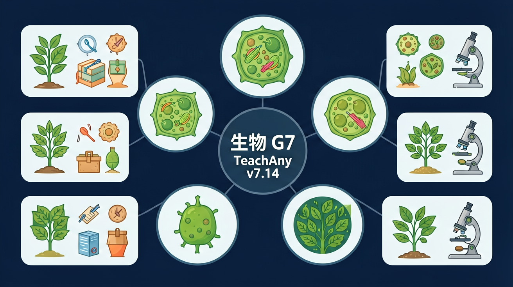

Interactive Canvas
光合速率模拟器
调节光照、CO₂和温度滑块，观察氧气释放量变化
调节滑块观察O₂释放速率变化
绿色植物利用阳光的能量，将二氧化碳和水转变为有机物并释放氧气——这个过程养活了地球上几乎所有生命。

选一个你关心的问题
选择或输入后，本课围绕你的问题展开。
光合作用的原料是什么？
光合作用是绿色植物利用光能，在叶绿体中将二氧化碳和水转变为储存能量的有机物（如葡萄糖），并释放氧气的过程。这是地球上最重要的化学反应之一，每年固定约2000亿吨碳。
但是：植物既没有嘴也没有胃，它们如何"制造食物"？
所以：学习光合作用——理解绿色植物这台神奇的"太阳能食物工厂"
反应式：
CO₂ + H₂O ──光照──→ 有机物(C₆H₁₂O₆) + O₂
条件：光照 & 叶绿体 ｜ 原料：CO₂、H₂O ｜ 产物：有机物、O₂
二氧化碳（来自空气，通过气孔进入）+ 水（来自土壤，通过导管运输到叶片）
有机物（主要是葡萄糖，储存化学能）+ 氧气（释放到大气中）
光照提供能量驱动反应；叶绿体是光合作用的场所，含有叶绿素可以捕获光能
光合作用的发现历经数百年，多位科学家通过精巧实验逐步揭示了这一过程。每个实验都巧妙地控制了变量，其设计思路对我们学习科学方法论有重要启发。下面介绍三个里程碑式的实验，它们分别证明了光合作用的原料、产物和条件。
将一棵2.3kg柳树种在90.8kg干土中，只浇水，5年后柳树重76.7kg但土壤仅减少约57g。结论：植物生长的物质主要来自水（后人补充：还有CO₂）。变量控制：只给水不施肥，排除土壤因素。
密封玻璃罩内蜡烛熄灭、小鼠死亡；但放入绿色植物后蜡烛能燃烧、小鼠能存活。结论：植物能更新空气成分，释放氧气。局限：未发现光的必要性。
将天竺葵暗处理后，用锡箔纸遮住叶片一半，光照数小时后用碘液检测。结果：见光部分变蓝（有淀粉），遮光部分不变色。结论：光是光合作用的必要条件，产物是淀粉（有机物）。
光合作用不仅仅是植物自身的营养方式，它对整个地球生态系统具有不可替代的意义。可以说没有光合作用就没有现在的地球生命。光合作用维系着大气中氧气和二氧化碳的平衡，为几乎所有生物提供了食物和能量的最终来源。化石燃料（煤炭、石油、天然气）实际上也是远古光合作用固定的太阳能。光合作用还通过吸收CO₂参与全球碳循环调节气候变化。
直接或间接为几乎所有生物提供食物。食物链中的能量最终都来自植物光合作用固定的太阳能。
释放氧气维持大气含氧量约21%，满足所有需氧生物的呼吸需求。地球早期大气无氧。
吸收CO₂释放O₂，维持大气中碳和氧的相对平衡，调节温室效应稳定气候。
光合作用的速率受多种环境因素影响。在农业生产中，了解这些因素可以帮助我们合理安排栽培措施，提高作物产量。主要的影响因素包括光照强度、二氧化碳浓度和温度三个方面，它们都与反应式中的条件和原料有关。每种因素都存在最适范围，并非越多越好。
光是能量来源。在一定范围内光越强速率越快，达到光饱和点后不再增加。阴雨天产量低就是光照不足的原因。
CO₂是原料。大棚种植适当增加CO₂浓度（如施有机肥释放CO₂）可显著提高产量。
影响酶活性。一般最适温度25-30℃，过高（>40℃）酶失活，过低（<5℃）反应极慢。
调节光照、CO₂和温度滑块，观察氧气释放量变化
错：光合作用和呼吸作用是一回事
对：光合是合成有机物储存能量，呼吸是分解有机物释放能量，方向相反
错：光合作用只在白天进行
对：关键是有无光照而非白天黑夜，人工补光夜晚也可进行
错：有阳光就能光合作用
对：CO₂和H₂O是原料，光是能量，叶绿体是场所，四者缺一不可
写出光合作用的文字表达式，标明条件和场所。
解释为什么大棚种植蔬菜时要适当增加CO₂浓度？
设计实验证明光合作用产生了氧气（说明材料、步骤和预期现象）。
👀 看见它：在生活的真实场景里，「《光合作用》 · 生物 G7 · TeachAny v7.14」长什么样？先找到一两个能摸得着的例子。
🧩 拆开它：它由哪几个关键部分组成？每个部分起什么作用、背后的原理是什么？
🚀 迁移它：换一个情境，这个结论还成立吗？试着解释一个课本之外的新例子。
将金鱼藻放在光下，可以看到有气泡产生，这些气泡中的气体主要是？
光合作用是地球上最重要的化学反应，是所有生命的能量基础。